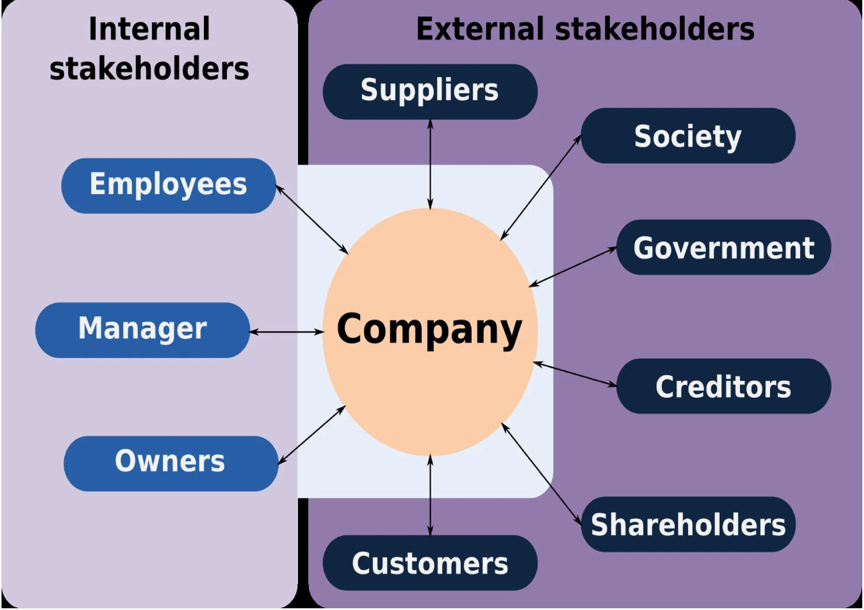
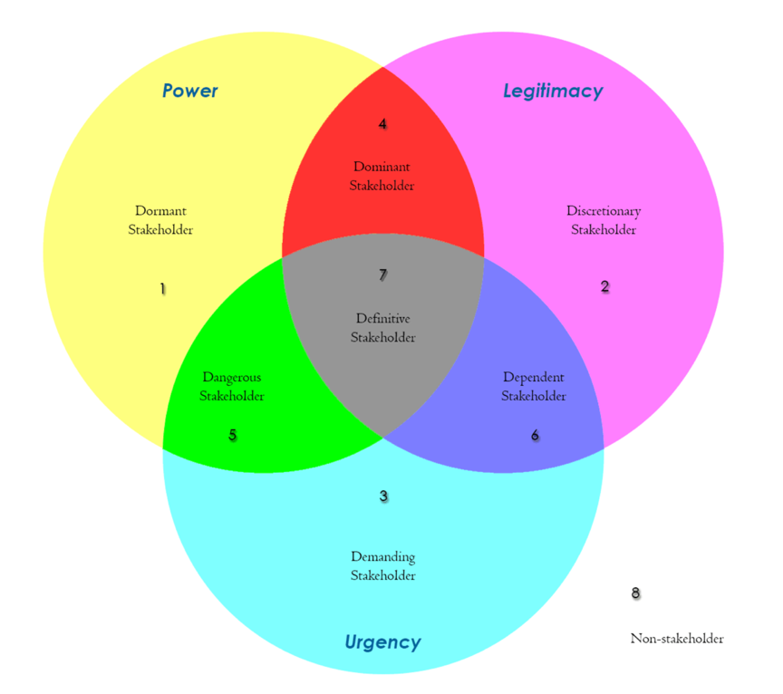

Toolkit2---Stakeholder Analysis:
STAKEHOLDER ANALYZER
Introduction:
The function of this tool is to help users comprehensively think about the types of stakeholders,
classify and evaluate the importance of stakeholders,
generate STAKEHOLDER MAP, and finally help users determine the priority of stakeholders and find out
the appropriate countermeasures
Step 1: Identify your stakeholders
Stakeholders are those who may be affected by or have an effect on an effort.
They may also include people who have a strong interest in the effort for academic,
philosophical, or political reasons, even though they and their families,
friends, and associates are not directly affected by it.
The most common stakeholders are as follows which will be helpful for identifying your stakeholders:

Step 2: Classify your stakeholders

-
Non-Stakeholders – These entities really aren’t stakeholders as they possess none of
the attributes of power, legitimacy, or urgency. As a project manager,
it is a good idea to be aware of them as at some point, during the identification process,
they were thought important enough to have been at least mentioned. Otherwise,
they can be safely ignored as part of risk, communications, and stakeholder management planning.
-
Latent – These entities possess only one of the three potential attributes. As such,
they will be unlikely to affect any impact and likely to be uninterested in project.
Similar to non-stakeholders, a latent stakeholder need not occupy much of your time as a project manager.
None the less, they should be at least kept in mind as they do have a relationship to the project,
albeit one of little salience.
-
Expectant – When a stakeholder possesses two of the three attributes they are said to be expectant
as they will anticipate influencing the project. Unlike the latent level, an expectant stakeholder
becomes active and the quantity of effort applied to manage the expectations of such entities must be
increased accordingly. Additionally, there is a possibility that an expectant entity will be looking
for ways to achieve the missing third salience attribute. Specific understanding and planning are
recommended for this level of stakeholding entity.
-
Definitive – When an entity possesses all three of the attributes they are then a
definitive stakeholder and therefore highly salient and influential to the project.
In preparing your risk, stakeholder, and communications management plans the needs of
definitive stakeholders must be explicitly elucidated.